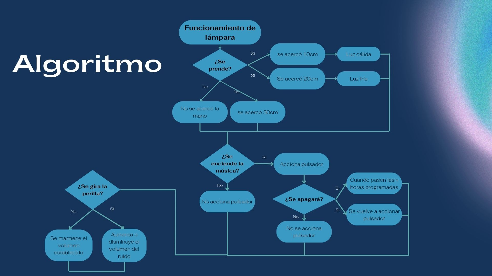
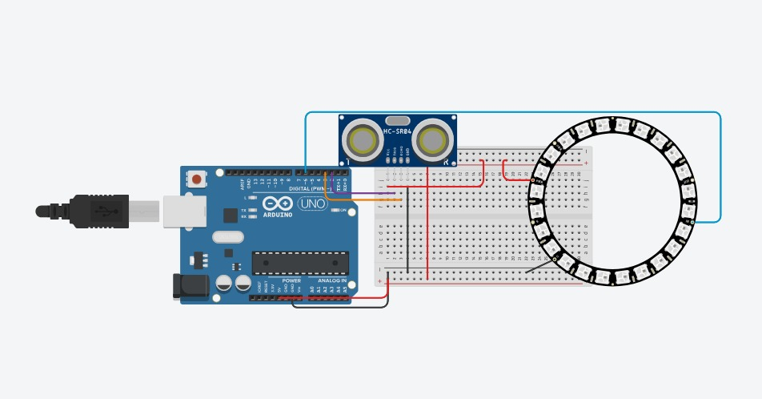
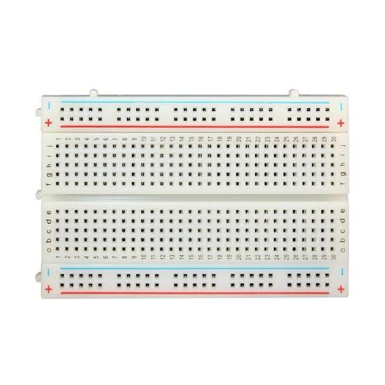
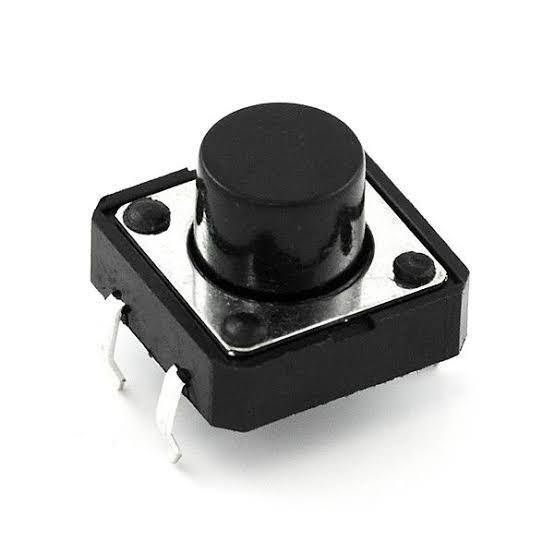
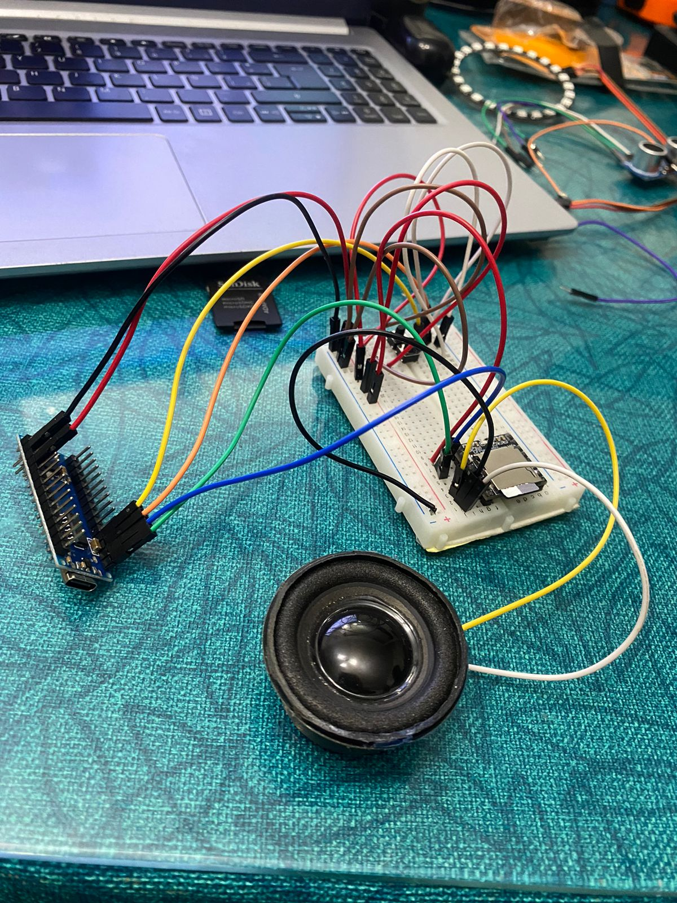

Lumin
¿Cómo logramos que funcione la lampara?
Algoritmo

El algoritmo se realizo para demostrar la funcionalidad de la lampara.
Programación
Realizamos el siguiente código de programación para que la lampara Lumin pueda encender en diferentes colores según la distacia que el sensor detecte de algún objeto, además de reproducir música cómo funciones. También en esta sección vas a encontrar los.
Código de Programación
i =
#include
#include "SoftwareSerial.h"
#include "DFRobotDFPlayerMini.h"
#define NEO_PIN 2 // Pin al que está conectado el Neopixel
#define NUMPIXELS 24 // Número de Neopixels que estás usando
#define TRIG_PIN 3 // Pin Trig del sensor de ultrasonido HC-SR04
#define ECHO_PIN 4 // Pin Echo del sensor de ultrasonido HC-SR04
#define RX_PIN 10 // Pin RX del módulo DFPlayer
#define TX_PIN 11 // Pin TX del módulo DFPlayer
#define BUTTON_PIN 5 // Pin del pulsador
#define STOP_PIN 6 // Pin para detener el DFPlayer con resistencia pull-up
Adafruit_NeoPixel pixels(NUMPIXELS, NEO_PIN, NEO_GRB + NEO_KHZ800);
uint32_t currentColor = pixels.Color(0, 0, 0); // Inicialmente apagado
SoftwareSerial mySoftwareSerial(RX_PIN, TX_PIN); // RX, TX
DFRobotDFPlayerMini myDFPlayer;
int lastButtonState = HIGH; // Estado anterior del botón, inicializado en HIGH porque INPUT_PULLUP
bool isPlaying = false; // Estado inicial: pausado
void setup() {
pixels.begin(); // Inicializa el objeto Neopixel
pinMode(TRIG_PIN, OUTPUT); // Configura el pin TRIG_PIN como salida
pinMode(ECHO_PIN, INPUT); // Configura el pin ECHO_PIN como entrada
pinMode(BUTTON_PIN, INPUT_PULLUP); // Configura el pin del pulsador como entrada con resistencia pull-up
pinMode(STOP_PIN, INPUT_PULLUP); // Configura el pin para detener el DFPlayer como entrada con resistencia pull-up
Serial.begin(9600); // Inicializa la comunicación serial con velocidad de 9600 baudios
mySoftwareSerial.begin(9600); // Inicializa la comunicación serial del DFPlayer
if (!myDFPlayer.begin(mySoftwareSerial)) { // Inicializa el DFPlayer Mini
Serial.println(F("Error al iniciar DFPlayer"));
while(true);
}
myDFPlayer.volume(30); // Configura el volumen del DFPlayer (ajusta según tus necesidades)
}
void loop() {
int buttonState = digitalRead(BUTTON_PIN);
int stopButtonState = digitalRead(STOP_PIN);
long duration, distance; // Variables para almacenar la duración del pulso y la distancia
digitalWrite(TRIG_PIN, LOW); // Establece el pin TRIG_PIN en bajo
delayMicroseconds(2); // Espera 2 microsegundos
digitalWrite(TRIG_PIN, HIGH); // Establece el pin TRIG_PIN en alto
delayMicroseconds(10); // Espera 10 microsegundos
digitalWrite(TRIG_PIN, LOW); // Establece el pin TRIG_PIN en bajo
duration = pulseIn(ECHO_PIN, HIGH); // Mide la duración del pulso en el pin ECHO_PIN
distance = (duration / 2) / 29.1; // Calcula la distancia en centímetros utilizando la fórmula d = (t / 2) / 29.1
// Actualiza el color del Neopixel según la distancia medida
if (distance >= 0 && distance <= 10) x
// Color naranja
currentColor = pixels.Color(255, 100, 0);
} else if (distance > 10 && distance <= 20) {
// Color celeste
currentColor = pixels.Color(150, 50, 10);
} else if (distance > 20 && distance <= 30) {
// Color celeste
currentColor = pixels.Color(50, 50, 55);
} else if (distance > 30 && distance <= 40) {
// Color azul
currentColor = pixels.Color(0, 0, 255);
} else if (distance > 40 && distance <= 50) {
// Apaga el Neopixel
currentColor = pixels.Color(0, 0, 0);
}
pixels.fill(currentColor); // Establece el color configurado
pixels.show(); // Muestra el color configurado
// Verifica si el botón ha sido presionado
if (buttonState == LOW && lastButtonState == HIGH) {
// Alterna el estado de reproducción
if (!isPlaying) {
myDFPlayer.play(1); // Reproduce la pista específica "0001.mp3"
isPlaying = true;
} else {
myDFPlayer.stop(); // Pausa la reproducción
isPlaying = false;
}
// Espera a que se suelte el botón para evitar rebotes y múltiples activaciones
while (digitalRead(BUTTON_PIN) == LOW) {
delay(10);
}
}
// Verifica si el botón de parada ha sido presionado
if (stopButtonState == LOW) {
myDFPlayer.stop(); // Detiene la reproducción
isPlaying = false;
while (digitalRead(STOP_PIN) == LOW) {
delay(10); // Espera a que se suelte el botón de parada para evitar rebotes y múltiples activaciones
}
}
// Guarda el estado actual del botón
lastButtonState = buttonState;
delay(50); // Pequeña demora para evitar rebote
}
Tabla
De Costos
| Name | Description | Price |
|---|---|---|
| Arduino Nano | Se eligio el Arduino Nano, por el tamaño de la lampara. | 16.70 |
| Neo Pixel | 24 Led WS2812.Porque brilla más que 1 led normal | 15.00 |
| Sensor urtrasonido | Se eligio el sensor ultrasonico HC-SR04 para poder controlar el nanopixel sin tocar la lampara | 6.20 |
| Pulsador | Se eligio el Pulsador, Uno para darle PLAY al audio ¨Le da una una vuelta a la camción y se apaga¨ y otro para para la música.El precio por cada pulsador es 0.30 | 0.30 |
| Parlante/Bocina | Se eligio el Parlante/Bocina para escuchar la música. | 5.0 |
| Potenciómetro b5k | Se eligio el Potenciómetro b5k para regular el volumen del parlante. | 0.80 |
| DF Player ¨MP3¨ | Se eligio el df player ¨MP3¨ para lograr leer los archivos de audio y controlar el altavoz . | 9.30 |
| 53.3 | ||
Tinkercad
Circuito y componentes usados








Proceso de trabajo

Componentes usados
Los componentes usados en el circuito fueron: DF player mini, Potenciómetro mono lineal, Protoboard, Neopixel 24, Bocina 3W, Cables Dupont, Pulsador, Sensor de ultrasonido, Arduino nano.

Funcionamiento
Se realisarón las pruebas del funcionamiento del circuito para lograr prender las luces con el sensor, Colocar y reproducir la música, encenderla y apagarla, entre otras.